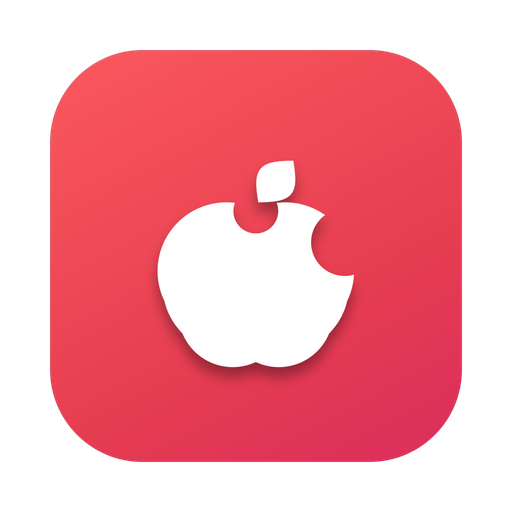

Early & experimental · Apple Silicon · macOS 26+
Switch games you own,
native on your Mac.
Napple rewrites a game's own ARM64 code ahead of time, answers the console OS with a Horizon runtime and translates the GPU API to Metal.
No emulator. No JIT. You get a standalone .app.
Requires an Apple Silicon Mac. You bring your own game and keys; nothing is bundled.
The Switch and your Mac speak the same CPU language
Both are ARM64. So Napple doesn't emulate the console, it runs the game's own machine code and rewrites, ahead of time, only what macOS forbids.
- 1
Ingest
XCI / NSP / NSZ containers, NCA decryption with your keys, updates and DLC merged in any order.
- 2
Analyze & resolve
Load the NSOs, discover functions and patch sites, look up signatures from data, never per-game code.
- 3
Rewrite
The reserved
x18register, thread pointer,svccalls and timer counters are rewritten. Everything else runs natively. - 4
Package & play
A locally signed
.appwith the Horizon runtime, NVN→Metal, audio, input and saves built in.
Napple Studio: drop a game, get an app
A small SwiftUI app. Give it your keys once, drop a game on the window, watch the pipeline run, launch the result. The first launch sets up the engine and its environment variables for you.
[rewrite] 24% main (1 gates, 5 relocations) [romfs] 62% copying 2.4 GB
Running on the runtime
Where it stands
Napple is early and moving fast. Two titles boot to their title screen and early gameplay; neither is fully playable yet. Coverage below is an estimate of the Switch platform surface, not per-game compatibility.
Install in one step
- Download the .dmg and drag Napple Studio onto Applications.
- Open it. Studio places the engine (
napple, runtime, launcher) and setsNAPPLE_HOME/NAPPLE_CLIfor you. - Add your own
prod.keysand firmware once, then drop a game.
Prefer the terminal? Unzip the .zip and run ./install.sh. The napple command works in new Terminal windows afterwards.
"macOS can't verify this app"?
Builds are ad-hoc signed unless the maintainers have notarization configured. Right-click the app and choose Open, or run once:
xattr -dr com.apple.quarantine /Applications/NappleStudio.app
Needs Apple Silicon and macOS 26 or later. Every commit to main publishes a new release.
Legal, up front
- You must own the game and bring your own keys and firmware. Nothing is downloaded, bundled or committed.
- Built apps contain game-derived content and are for your personal use only. Don't share them.
- Napple is not affiliated with or endorsed by Nintendo.